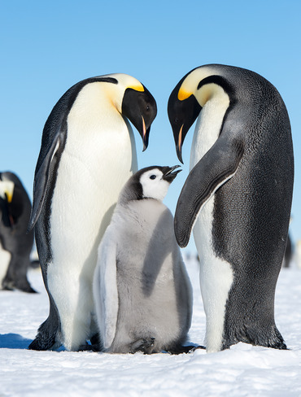

The world's tallest penguin, the emperor penguin (Aptenodytes forsteri) is a truly massive bird that lives solely in Antarctica. In fact, the emperor penguin can be up to 39 inches (100 cm) tall and weigh nearly 100 lbs (49 kg), so there's no doubt that this is one big bird. Emperor penguins live primarily on the stable pack ice of Antarctica, though you can sometimes find them on solid land. The species creates breeding colonies that can have thousands of individuals that band together to raise their young. The mating rituals and life cycles of the emperor penguin are well-documented in films like March of the Penguins. Each parent takes a turn incubating the egg for up to two months at a time while the other waddles back to the ocean to feed. Eventually, a young emperor penguin chick will hatch, chrèche, and then fledge into the sea before the start of the next winter season. Since they rely so much on the Antarctic sea ice for food and shelter, emperor penguins are particularly susceptible to the effects of climate change. The International Union for Conservation of Nature (IUCN) lists the emperor penguin as near threatened as a result of this habitat loss.
While the emperor penguin might be one of the best-known penguin species, its close cousin, the king penguin (Aptenodytes patagonicus), is no less spectacular. The king penguin is slightly smaller than the emperor with a maximum height of about 39 inches (100 cm) and a maximum weight of about 40 lbs (18 kg). Physically, the king and emperor penguins look a lot alike. However, king penguins have much more silver in the feathers around their necks and backs. Additionally, king penguin chicks are a near-solid brown in color when they hatch while emperor penguin chicks have silver heads with black and white bodies. It's also easy to tell the king and emperor penguins apart in the wild because they don't live in the same regions. Emperor penguins are true Antarctic birds while king penguins live on South Georgia, the Falkland Islands (Islas Malvinas), Tierra del Fuego, and other sub-Antarctic Islands. They do not live in Antarctica proper. The coolest thing about king penguins is that they live in massive breeding colonies that can have hundreds of thousands of breeding pairs. King penguins also have the longest breeding cycle of any penguin species. Young king penguins don't fledge until they are about 14 to 16 months old, so you will see chicks in a king penguin colony all year long.